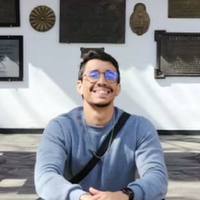

I'm a Fullstack Developer with experience in building and maintaining web applications. I'm passionate about clean code, solving problems, and delivering value to users.

My career reflects a solid progression from technical support to solution development. I began as a Software Support Analyst and later as Support Manager, leading teams and ensuring high customer satisfaction worldwide. During this period, I gained deep expertise in web servers, databases, and languages such as PHP and JavaScript, while also creating onboarding materials and documentation that improved internal efficiency.
In recent years, I shifted my focus to low-code development, working as a Solutions Developer at Axians Low-Code US. I built and maintained applications for national and international clients, applying agile methodologies and best practices in UX and CSS to deliver modern, intuitive interfaces. I was also responsible for translating business requirements into clear technical specifications, helping reduce rework and accelerate delivery.
This combination of experiences allows me to merge technical and strategic perspectives: from advanced support to building scalable solutions. Today, my strength lies in transforming complex needs into functional, well-structured applications, always with a focus on quality, collaboration, and continuous innovation.
Skills & tools
Whether you have a project in mind, a question, or just want to say hello — my inbox is always open.